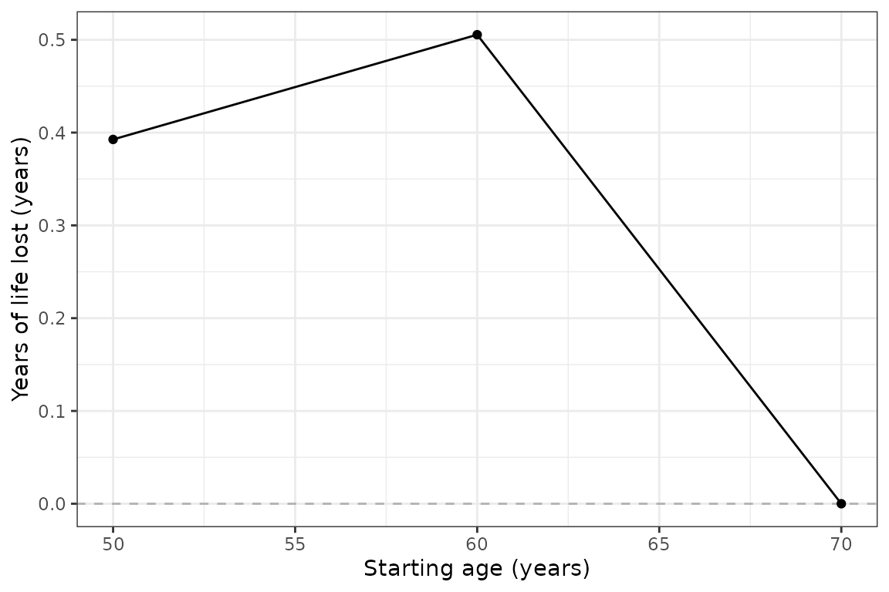
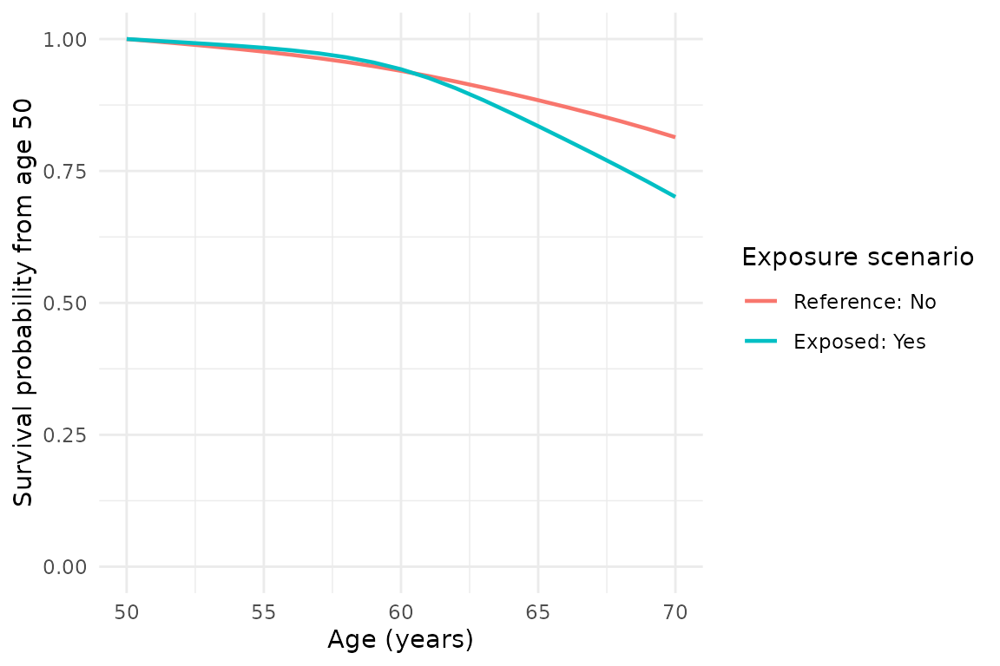

estimandYLL
は、2つの曝露シナリオの制限付き期待余命（ERL）の差を、
年単位の損失生存年数（YLL）として推定する R パッケージです。
差は常に「基準水準の ERL − 曝露水準の ERL」です。
対象集団と年齢を指定します
target_population は毎回指定します。"all"
は全解析対象者、 "exposed"
は観察時の曝露者、"unexposed" は観察時の非曝露者です。
モデルは全解析対象者で推定し、予測した生存曲線を平均する集団だけを変えます。
data(yll_toy)
result <- estimate_yll(
data = yll_toy[1:500, ],
time_var = "period", event_var = "event",
exposure_var = "hypertension",
reference_level = "No", exposed_level = "Yes",
age_at_entry_var = "age", target_population = "unexposed",
age_start = 50, age_end = 70, age_interval = 10,
confounders_baseline = "sex", B = 0, use_future = FALSE
)
result$summary
#> # A tibble: 3 × 7
#> starting_age erl_reference erl_exposed yll yll_se ci_low ci_high
#> <dbl> <dbl> <dbl> <dbl> <dbl> <dbl> <dbl>
#> 1 50 18.7 18.3 0.393 NA NA NA
#> 2 60 9.45 8.95 0.505 NA NA NA
#> 3 70 0 0 0 NA NA NAこの例では、合成データの500人を使い、高血圧のない人を対象集団とします。
50歳・60歳・70歳から70歳までの結果を1回の呼び出しで計算します。
age_interval
は結果を表示する開始年齢の間隔であり、主推定法の計算は1年刻みです。
開始年齢が上限年齢と同じなら、ERL と YLL は0になります。
推定値を解釈します
曝露が生存を短くする場合、YLL は正になります。 曝露者を対象にした場合は、基準水準なら得られる年数と解釈します。 非曝露者を対象にした場合は、曝露水準なら失う年数と解釈します。 対象集団による符号の反転は行いません。負の推定値もそのまま返します。
summary
は開始年齢ごとに1行です。erl_reference と
erl_exposed が両水準の ERL、yll
がその差、yll_se が標準誤差、ci_low と
ci_high が信頼区間です。
上限年齢、対象集団、曝露水準などの共通設定は meta
にあります。
信頼区間と図を確認します
B = 0
は点推定だけを計算する指定です。実際の解析では、例えば
B = 2000
として個人単位のブートストラップを行います。ci_method = "normal"
は 標準誤差を用いる正規近似、"percentile"
は反復推定値の分位点による区間です。
どちらも個人を復元抽出するノンパラメトリック・ブートストラップです。
区間は年齢ごとのもので、曲線全体を同時に覆う信頼帯ではありません。
if (requireNamespace("ggplot2", quietly = TRUE)) {
print(plot_yll(result) + ggplot2::theme_bw())
print(plot_survival(result, age_start = 50))
}

返り値は編集可能な ggplot
オブジェクトです。+ ggplot2::labs() でラベルを、
+ ggplot2::theme()
で外観を変更し、ggplot2::ggsave() で保存できます。
解析時の前提を確認します
入力は1人1行で、選択した列の欠測は事前に明示的に処理してください。 各人の生存曲線を開始年齢で1に戻してから、対象集団で平均します。 その年齢で実際に観察された生存者だけを選ぶ推定ではありません。 曝露シナリオは持続的な曝露状態を表し、開始年齢で始める介入そのものではありません。
因果的な解釈には、交絡、曝露の重なり、打切り、コホート参加過程、モデルに関する
仮定が必要です。観察範囲外の年齢やデータの少ない組合せでは、モデルへの依存が強くなります。
反復の失敗は警告と meta$bootstrap_failures に記録されます。
失敗を多数含む信頼区間は、そのまま解釈しないでください。
yll_toy
は合成データです。この例は論文の実データによる結果の再現ではありません。
詳しい定義、比較手法、旧版からの移行方法は英語の解説記事を参照してください。